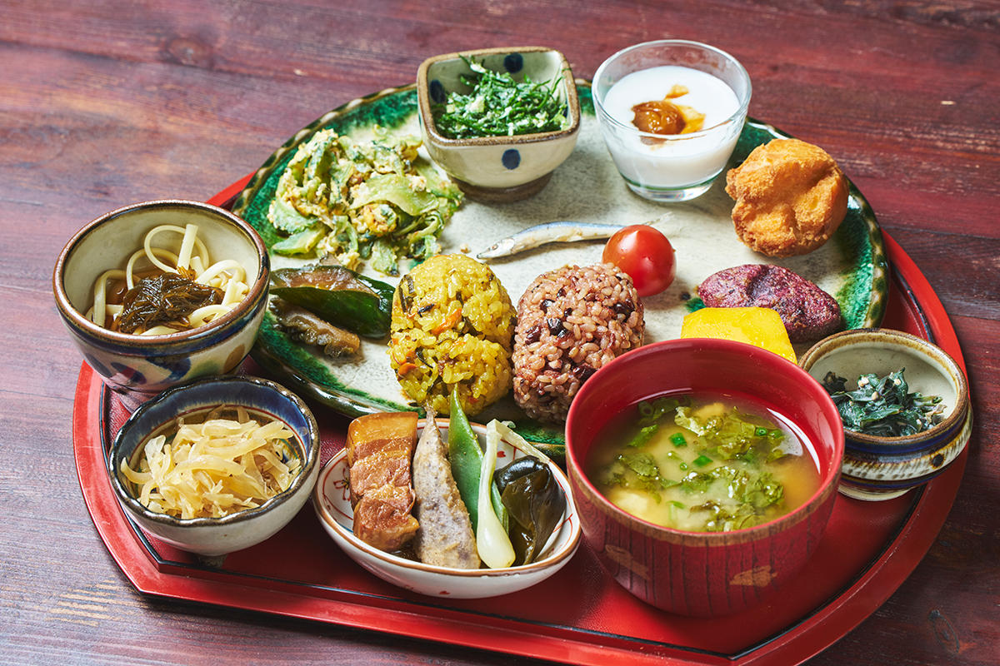
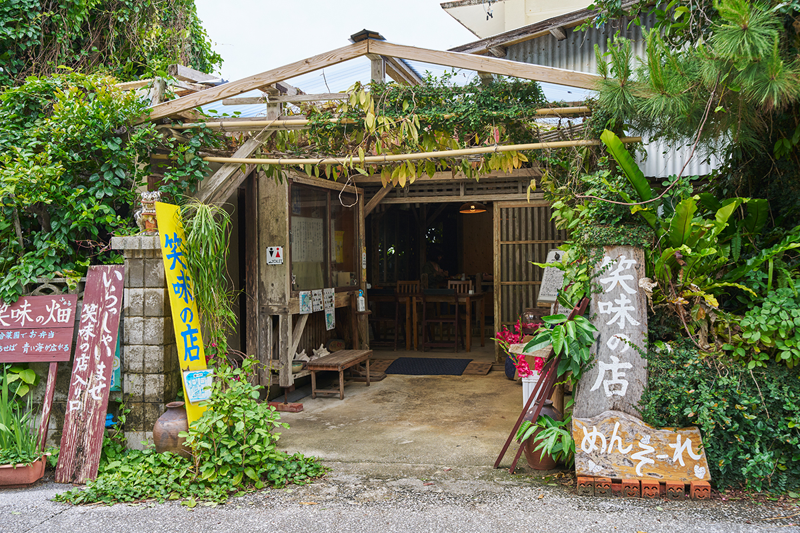
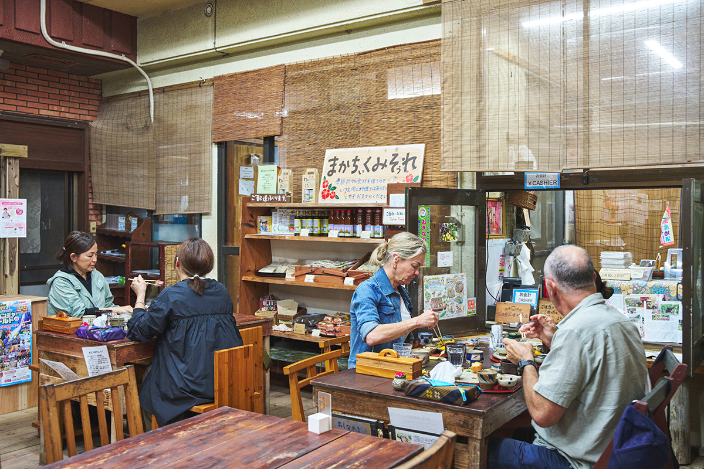
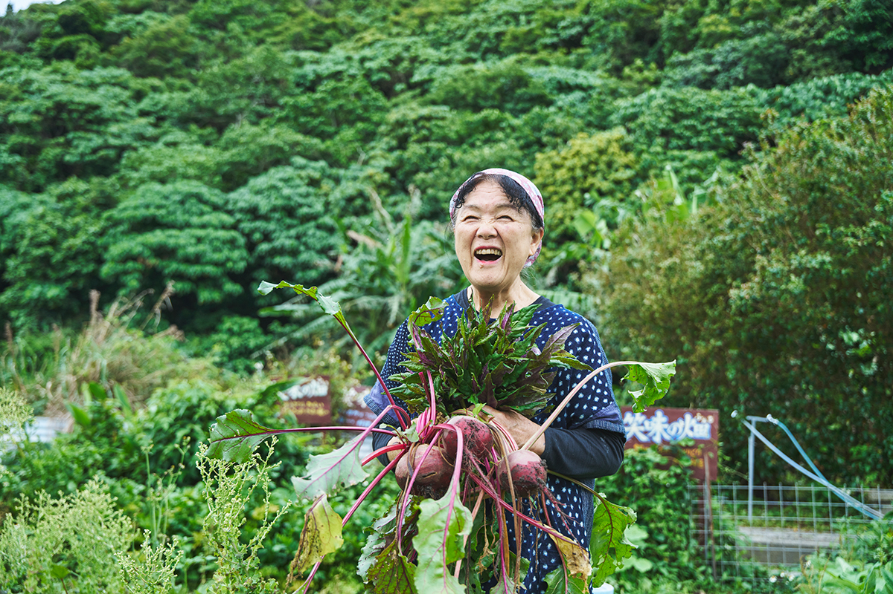
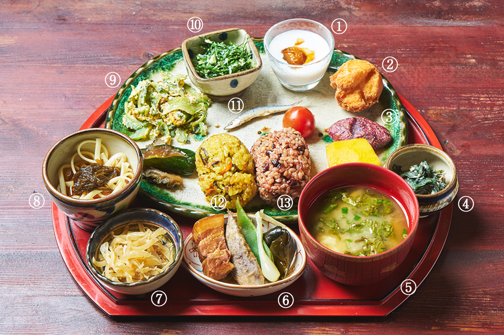
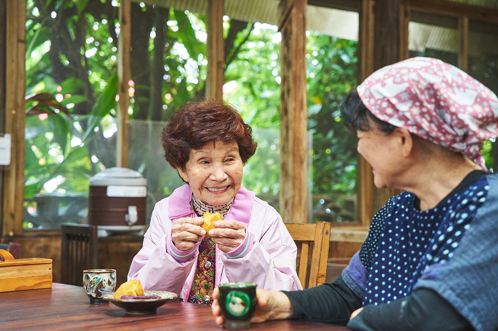
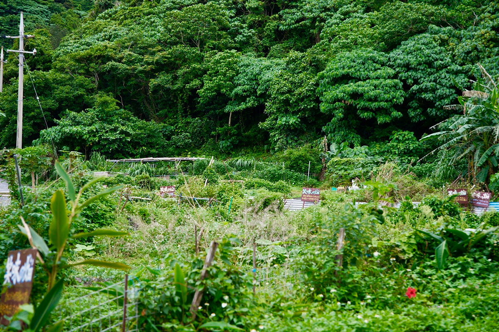
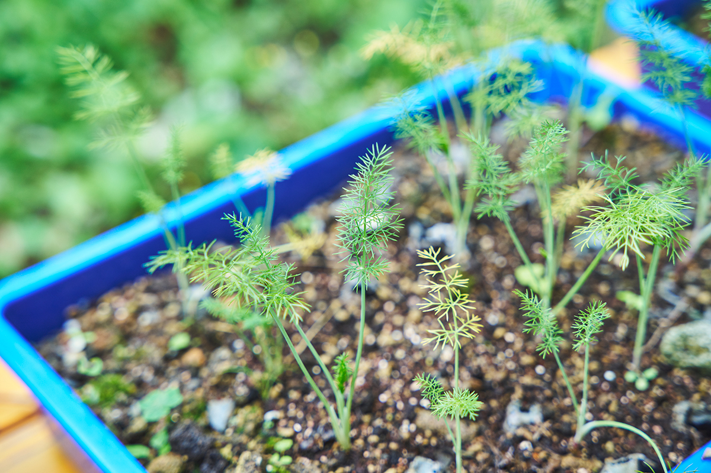
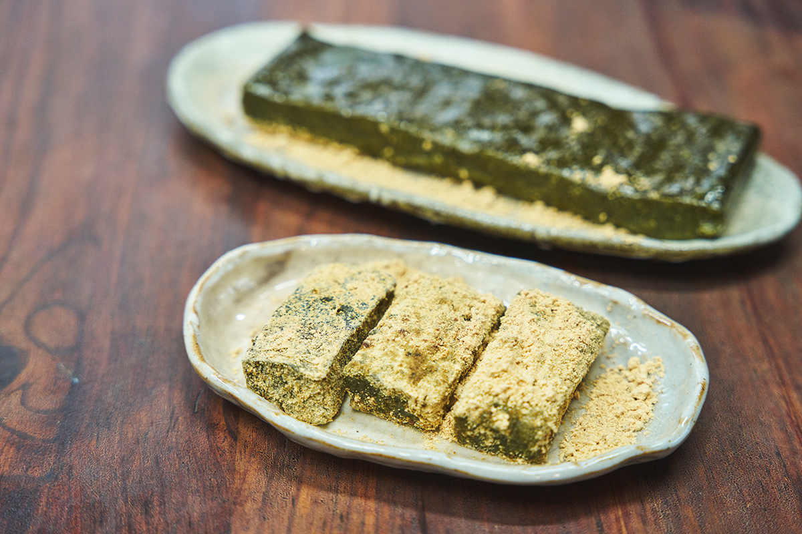
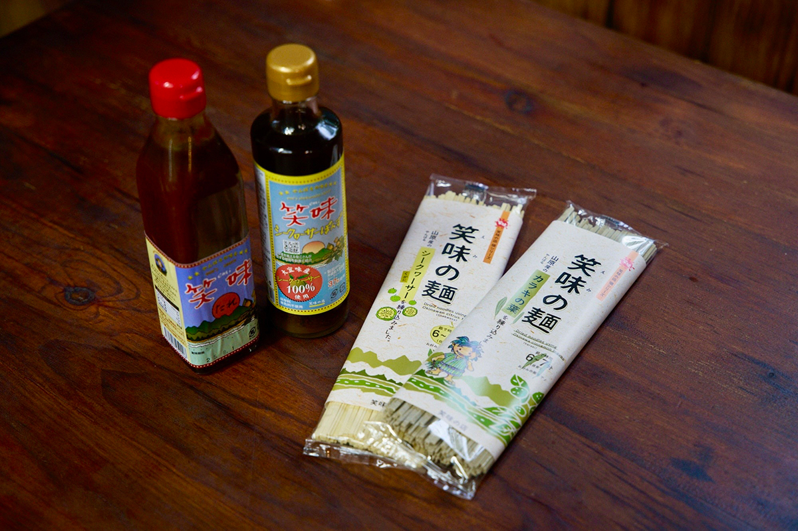

Префектура Окинава · Огими · еда
«Эми но мисэ» в Огими: обед из островных овощей в деревне долгожителей

На севере острова Окинава, в краю Ямбару, то и дело встречаешь бодрых людей за восемьдесят. В деревне Огими, которую когда-то называли самой долгоживущей в Японии, хозяйка небольшого ресторана много лет собирает их рецепты и кормит ими гостей.
Место
Ресторан в жилом доме
Ямбару, лесистый север острова Окинава, спускается здесь прямо к прозрачному морю. Огими совсем маленькая деревня, но в фермерский ресторан «Эми но мисэ» едут туристы со всей префектуры и из других частей Японии, иностранцы, пожилые пары и молодые семьи. Вывеска нарисована от руки, зал устроен в перестроенном жилом доме, а из окна видно, как на ветру качаются островные овощи на грядках.

Кормят здесь не праздничной, а самой обычной едой, какую в Ямбару издавна ставили на стол каждый день. Овощи выращивают хозяйка и её соседи: без химических удобрений и пестицидов, по природному ритму. Поэтому в каждом блюде чувствуется сама земля Ямбару.

Память
Еда голодных лет
Сегодня овощи можно просто купить. В голодные послевоенные годы всё было иначе: что не вырастил, того не съел. Жители Ямбару распахивали крошечные участки между горами, придумывали, как растить и как готовить, и так кормили большие семьи. Главной едой был батат, его каждый день выкапывали ровно столько, сколько нужно. Клубни, задетые мотыгой, и совсем мелкие не выбрасывали: их перетирали и добывали крахмал. Его сушили про запас и заваривали в горячий кисель.

«Как приготовить то, что есть под рукой, придумывали в каждом доме. Эту мудрость я и хочу передать дальше»
хозяйка ресторана
Меню
Тринадцать блюд на одном подносе
Главное блюдо ресторана называется «Макатикуми-сорэ», на окинавском диалекте это значит «положитесь на нас». В 2025 году такой обед стоил 2300 иен. Продукты берут по сезону, поэтому состав меняется. Хозяйка хочет, чтобы гости попробовали как можно больше разных блюд, и на поднос выставляют целый ряд традиционной еды Ямбару.

Начинают со сладкого. Домашний каспийский йогурт поливают соусом из местной сливы умэ, сваренной с чёрным сахаром: на Окинаве слива поспевает раньше, чем на основных островах Японии. Андаги, самые известные окинавские пончики, здесь бывают двух видов. Одни замешаны на цедре и соке сикуваса, кислого цитруса, которым славится Огими, и пахнут свежо. Другие, тапиоковые, жарят из крахмала маниоки с фиолетовым бататом: они тянутся во рту так, как не тянется тесто из рисовой муки.
«Кандаба усати» это салат из листьев батата, но вместо уксуса его заправляют соком сикуваса, и кислинка получается мягче. В мисо-суп кладут нежный тофу юси и «хандаму»: этот островной лист с антоцианами издавна считали листом долголетия, при варке он становится слегка слизистым.
Самое сытное блюдо это «сава-рафутэ», свиная грудинка, томлённая в авамори, соевом соусе и бульоне из тунца кацуо. Хозяйка добавляет к ней сикуваса, а подаёт с островным луком ракке, клубнями таро и стручковой фасолью. Зелёная папайя растёт в Ямбару повсюду и всегда шла в еду как овощ: в «иритии» её сначала обжаривают, потом тушат, это традиционный способ готовки.
Холодная лапша «кугани» придумана в самом ресторане: в тесто уходят и цедра, и сок сикуваса без остатка. Её едят с водорослями мозуку, и она хорошо освежает. Летнюю горькую тыкву гоя запекают с яйцом: калий в ней понижает температуру тела, витамин C не разрушается при нагреве, а горечь будит аппетит.
«Ингана-дзунэ» родом именно из Огими: горький островной лист ингану, который, говорят, хорош для желудка, рубят и смешивают с тофу и мисо. Мелкую рыбку «сурургва» на Окинаве всегда ели с головой, а здесь варят её в соли. Этим способом готовить рыбу окинавцы гордятся.
Завершают обед два вида риса. «Ямбару-дзюси» это окинавский рис, сваренный со свининой, грибами сиитакэ, морковью и водорослями комбу, а куркума уттин даёт ему цвет и аромат. Второй вид риса бурый: раньше рис берегли и варили с фасолью адзуки, и сейчас к бурому рису добавляют чёрный рис и адзуки. В такой каше много клетчатки, витаминов и минералов.
История
Почему школьный диетолог открыла ресторан
С 1973 года хозяйка 15 лет работала диетологом в школьной столовой. Однажды ей поручили расспросить стариков о прежней еде и восстановить «авамэ», рис с клейким просом. Оказалось, что проса есть только привозное, а обмолотить его негде. Она своими глазами увидела, как исчезают и продукты, и инструменты.
Если ничего не записать и не передать, решила она, никто больше не захочет есть продукты и блюда Ямбару, их перестанут готовить, и они пропадут. С этим чувством долга она ушла из школы и в 1990 году открыла «Эми но мисэ».
Делом всей жизни для неё стали и беседы с долгожителями Огими. Окинава когда-то была первой в Японии по средней продолжительности жизни, а в 1993 году Огими, где очень высока доля здоровых пожилых людей, объявила себя «самой долгоживущей деревней Японии». Чем питаются люди, которые и в 80, и в 90 лет живут сами и с удовольствием работают в поле? Хозяйка обходила дом за домом, выходила с хозяевами на огород, стояла с ними у плиты, садилась за стол и всё записывала.
«Соседи здесь как родные»
хозяйка ресторана
Секрет
Три раза в день и разговор с соседями
Через три дома от ресторана живёт соседка, которой 97 лет. Хозяйка называет её своим ориентиром. С юности она прекрасно танцевала и была любимицей всей округи, а в хорошую погоду ходит пешком по дороге мимо ресторана, и шаг у неё удивительно лёгкий.

«Хочешь жить долго и здоровым, ешь три раза в день как следует. Готовое не покупай, готовь сама из сезонных овощей и тофу. И ещё настрой. Обязательно выходи из дома, встречайся с кем-нибудь и болтай»
соседка, 97 лет
Её мать тоже была долгожительницей: родилась в 1902 году и тихо ушла в 109 лет. В поле она всегда работала босиком, и её крепкие, толстые, как у слона, ноги знала вся округа.
«С юмором, всё время смеялась. Вот уж кто радовался жизни»
хозяйка ресторана
От таких старших хозяйка и переняла и кухню, и сам ритм жизни.

В 2000-х годах Окинаву назвали одной из пяти «голубых зон» мира, мест, где живёт много столетних, и к традиционной еде Ямбару потянулись и японцы, и иностранцы.
«Теперь приходят и подростки, и родители с маленькими детьми, спрашивают: а это что за овощ? Тогда я иду на огород, срываю и показываю. Однажды пришли студенты, несколько друзей, и попросили научить их готовить. Похоже, люди снова ценят, когда сам готовишь и сам ешь. Это радует»
хозяйка ресторана
Огород
Семена для соседей
На огороде перед рестораном крепко растут самые разные островные овощи. Хозяйка выращивает рассаду даже из случайно упавших семян и раздаёт её людям.
«В прошлом году у нас не задалась ингана, а на другом огороде, в других условиях, она может расти отлично. Вот я и раздаю рассаду тем, кому интересно. Хочется, чтобы местные сорта разошлись и сохранились. Сажать то, что любишь, и собирать урожай, это настоящая радость»
хозяйка ресторана

К 2025 году ресторан уже около пяти лет работал четыре дня в неделю и только по предварительной записи: овощей с огорода берут ровно столько, сколько нужно, чтобы ничего не пропадало. Сокращение рабочей недели, борьба с пищевыми отходами, цели устойчивого развития: над этим сейчас бьётся весь мир, а хозяйка давно нашла собственное решение.
«Завтра выходной, поеду в Наго заниматься рюкюскими танцами. Дома всё время звонит телефон, покоя нет. Так что иногда надо сбежать»
хозяйка ресторана
Радость растить и собирать, радость готовить и есть, радость работать всю жизнь, потому что чувствуешь, что так нужно. Как островные овощи, которые крепко держатся корнями за землю и оставляют семена следующему поколению, в Ямбару живут и передают дальше свою силу.


«Эми но мисэ»
- Адрес
- префектура Окинава, уезд Кунигами, деревня Огими, Оганэку, 61
- Телефон
- +81 980-44-3220
- Часы работы
- 11:00–15:00 (последний заказ)
- Выходные
- со вторника по четверг
- Цены / Вход
- обед «Макатикуми-сорэ» 2300 иен (2025 год); только по предварительной записи, не позднее часов работы накануне
Фото: Цунэтака Симабукуро.